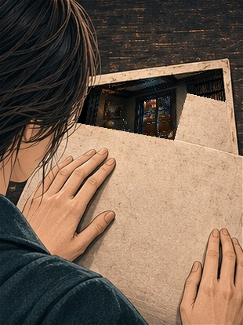
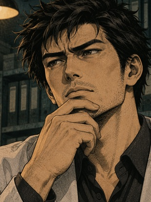
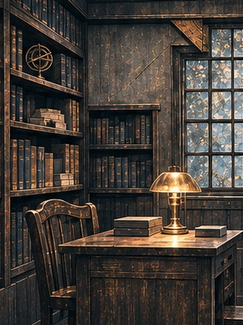
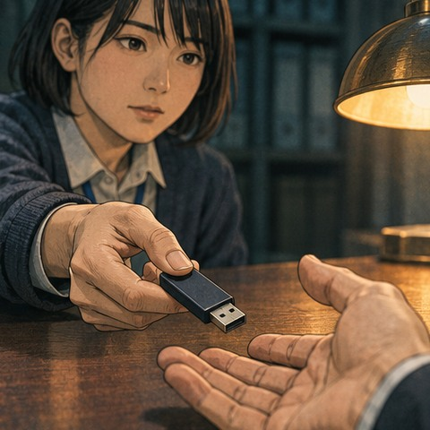

漫画版
第十九話「同じ部屋の別の窓」
資料室・最終報告の添付写真

人物と机上の品を紙で隠そう。背景だけなら、窓枠の特徴を追える。

窓の外は前に確認しました。今度は部屋の中ですね。
全景を保管していた箱を、この一覧で当たろう。
1 / 4
水城は保管棚を回り、書斎の写真が入りそうな箱を絞った。
候補が二枚。裏の番号は〇九一と〇九五です。
2 / 4
その横の壁の傷が斜めです。棚板の黒い節も同じ段にあります。

窓が似ているだけじゃない。補修の木片、壁の斜め傷、棚板の黒い節まで重なるのは片方だけだ。
書斎を特定した三つの照合点

① 補修の木片 ② 壁の斜め傷 ③ 棚板の黒い節
③ 棚板の節を比較した模式図〇九一 ／ 節あり 〇九五 ／ 節なし
三つの特徴がそろうのは〇九一。
〇九一を手掛かりに、最終報告が使った元の写真を調べてくれ。
3 / 4
保管担当が戻り、照合用のデータを手渡した。

保管担当から作業用のデータが届きました。
元の書斎写真から確認します。
元写真の机の前には、誰もいなかった。報告書の男は、どこから来たのか。
4 / 4